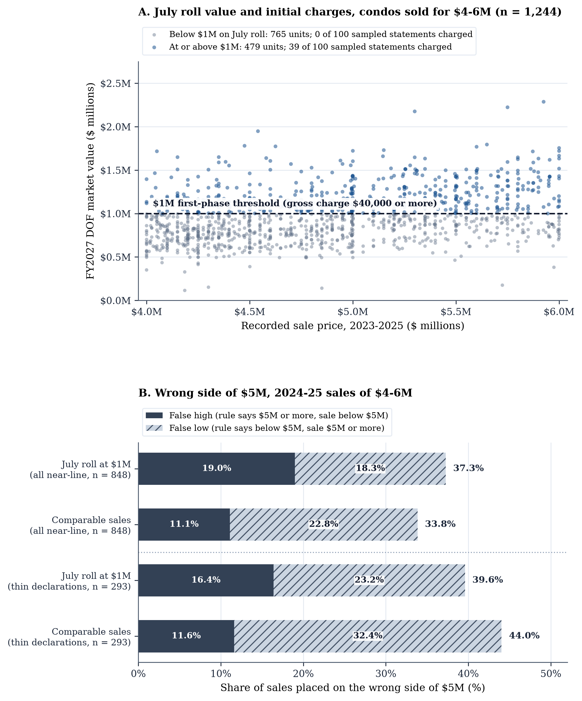

The first bills for New York City’s second-home surcharge are on owners’ tax statements now, due January 1. The city first notified about 17,000 owners. After it granted roughly 8,900 exemptions for primary residences and long-term rentals, about 8,000 properties were billed. On November 4 a state appeals court threw out a homeowners’ suit over how the city sent its notices, ruling that the owners had not shown any harm. Two other suits, which challenge the tax itself, are still pending.
The celebrity bills got the headlines. Business Insider found that Taylor Swift’s Tribeca homes, bought for a combined $47.7 million, carry a surcharge of just over $133,000 a year, about 0.28% of what she paid. The surprise is not limited to pop stars.
For an ordinary buyer around $5 million, the bill depends less on the price than on a rental formula the Department of Finance uses to value condos. Two apartments that sold for the same price can sit on opposite sides of a $40,000-a-year line.
What 200 November tax bills show
For the first two years, condos and co-ops pay once the city’s market value reaches $1 million, at 4% of the whole value. State law makes the city value a condo as if its building were a rental, not from what units sell for. So the city’s value is about a quarter of the sale price for a typical condo (23.4% at the median), against 105.5% for one- to three-family houses, which only pay from $5 million.
Of 1,244 condos that sold for $4 million to $6 million in 2023 to 2025, 479 (38.5%) are valued at $1 million or more. The other 765 owe nothing, however rarely their owners are in town.
I pulled 200 public tax statements dated November 14, 2026, 100 random units from each side of the line.
Above the line, 39 of 100 carry a surcharge, with a median of $48,609. In 34 of them the charge matches the statutory calculation to the cent. The statements don’t say why the other 61 show no charge; primary-residence and rental exemptions are the likely reason. Below the line, none of the 100 was billed.


Read the summary table
| Check | Group | Properties | Result |
|---|---|---|---|
| Nov 14, 2026 bills ($4–$6M) | City value under $1M | 100 | 0 billed (0%) |
| Nov 14, 2026 bills ($4–$6M) | City value $1M or more | 100 | 39 billed ($48,609 median bill) |
| 2028 comps backtest ($4–$6M) | All near-cutoff sales | 848 | 33.8% wrong side of $5M |
| 2028 comps backtest ($4–$6M) | Buildings needing area fallbacks | 293 | 44.0% wrong side of $5M |
Same building, similar unit, different tax side
Most of the gap is between buildings, not within them. Which development a condo sits in explains 77.1% of the variation in how the city values it relative to its price, so neighbors usually land on the same side. Not always. Of 198 pairs of nearly identical units (same building, same address, same sale year, prices within 5% and floor area within 10%), 5 sit on opposite sides of the line. In four of those pairs neither unit was billed in November. In the fifth, one owner got a bill of about $35,000 and the neighbor got nothing.
At the very top the formula runs backwards. The priciest towers are valued furthest below their sale prices, so the surcharge as a share of the price falls from 0.70% for $5 million to $7.5 million condos to 0.44% above $20 million, across 26,317 matched sales.
Why the 2028 fix brings its own problem for boutique condos
From July 1, 2028, condos and co-ops will be valued from comparable sales, with the same $5 million threshold and 0.8% to 1.3% rates as houses. That retires the rental formula, but small buildings rarely have enough recent sales to compare against.
The city has not said how it will pick comparables, so I tested a simple rule on 2024–25 sales: take the median price per square foot in the same building, and fall back to the neighborhood or the borough when the building has fewer than three sales. It put 33.8% of 848 sales between $4 million and $6 million on the wrong side of $5 million, about as many as today’s roll scaled to the same cutoff (37.3%). Where the rule had to borrow neighborhood or borough prices, the error rate rose to 44.0% of 293 sales. The city will also have to screen its sales: 31.3% of recorded condo deals above $5 million in those years were not ordinary arm’s-length sales, such as bulk developer transfers or deals between related parties.
Look up a NYC ZIP or condo building → Read the full study (v1.6)
Sources and methods
This article summarizes Which Condos Cross New York City’s Second-Home Tax Threshold? (Version 1.6) (10.5281/zenodo.24516899; Concept DOI 10.5281/zenodo.24484928), which links NYC Department of Finance FY2027 rolls and 200 sampled November 14, 2026 Statements of Account to NYC linked sales dataset 1.2.0 / 1.2.2 (10.5281/zenodo.24274709; linkage paper 10.5281/zenodo.24504489).
News and statutory context: New York Laws of 2026, Chapter 59, Part HH (Tax Law Article 30-C, §§ 1350–1356); NYC Department of Finance non-primary-residence surcharge billing and NYC Tax Commission Form TC107 guidance; Business Insider November 2026 review of Tribeca surcharge bills (~$133,000 on $47.7 million in purchases) and initial billing totals from Bloomberg Tax (about 8,000 properties billed of 17,000 first notified, after at least 8,900 exemptions); the November 4 Appellate Division, Second Department ruling as reported by Fortune and Courthouse News (dismissed for lack of standing; the suit concerned the notices, not the tax). Statements capture initial administrative billing ahead of March 2027 appeal dispositions. Companion full studies on transaction notches, foreclosure deeds, and buyer financing: The Shape of the Tax v3.12, When a Deed Is Not a Market Sale (v1.0.20 note / v1.0.15 paper), and Who Gets the House? v5.9.
Article text: CC BY 4.0. Credit Pablo Loschi, NYC Housing Data; retain the sample scope and date caveats.